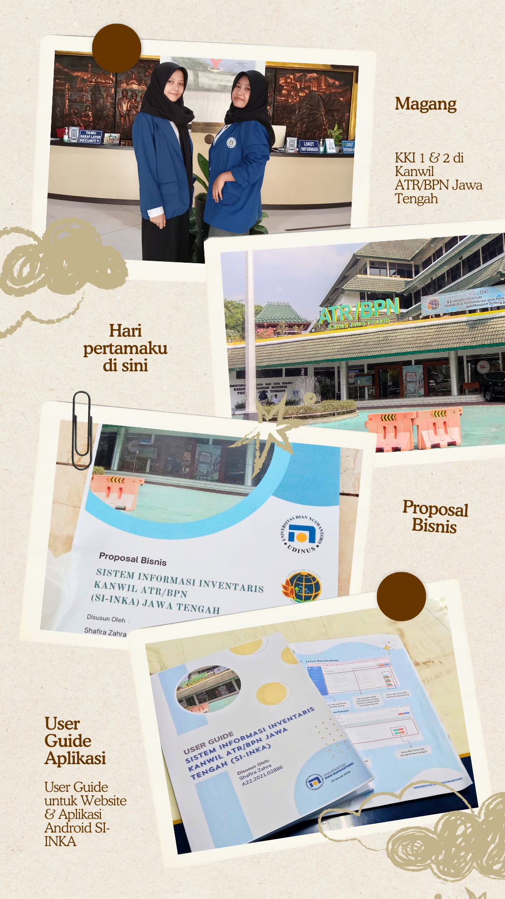
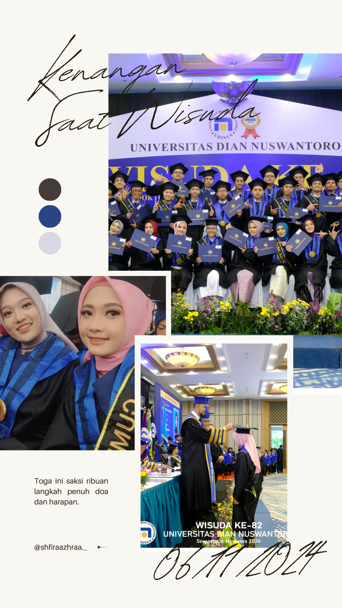
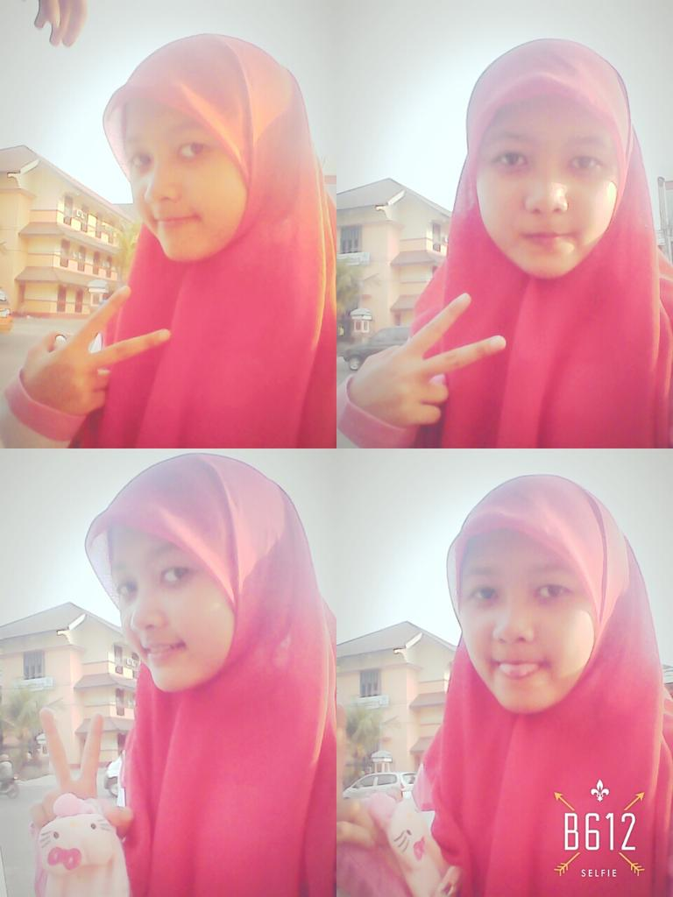
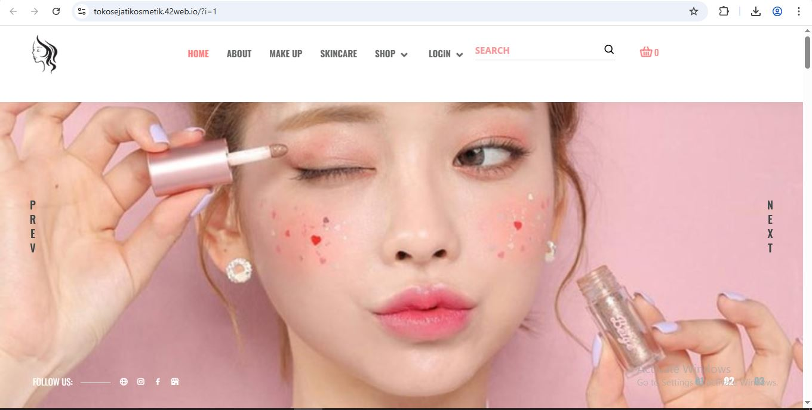
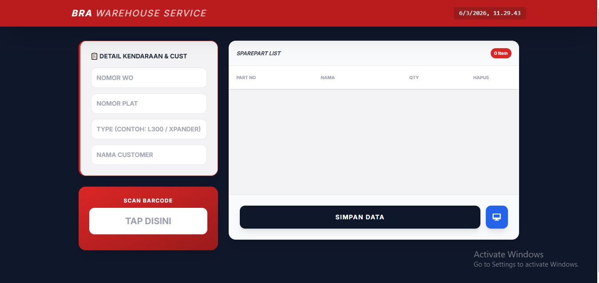
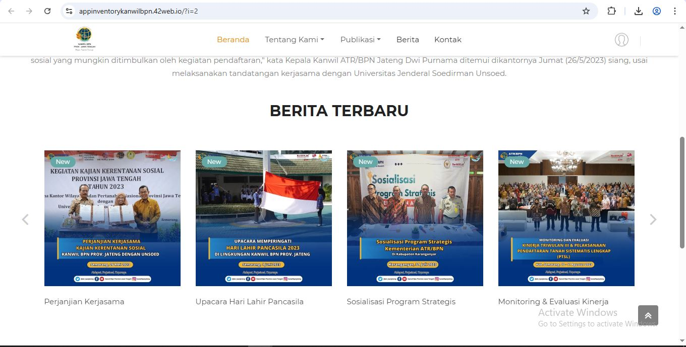
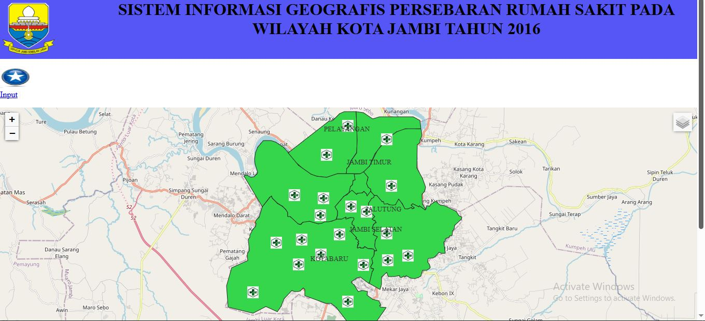

Open Me
❤

Welcome to my Portfolio ✨
Welcome to my Portfolio ✨
Seorang Multidisiplin Lulusan D3 Teknik Informatika UDINUS yang menghubungkan ketelitian Administrasi Servis dengan inovasi Front-End Development. Saya memadukan logika sistem, disiplin operasional, dan estetika visual untuk menciptakan solusi digital yang presisi dan intuitif.
Diekstrak dari proyek nyata, pengalaman kerja, dan sertifikasi ✨
(Klik nama tempat untuk detail dokumentasi ✨)
Warranty Service Claim Administrator

• Menginput data klaim (informasi kendaraan, jenis kendaraan, part yang diganti ke dalam sistem.
• Mengelola dan mengarsipkan semua dokumen klaim garansi (faktur, job order, formulir klaim, foto kerusakan, dll) baik secara fisik maupun digital.
• Memastikan kelengkapan dan keakuratan data klaim sebagai bukti.
• Berkoordinasi dengan bagian bengkel/teknisi terkait teknis perbaikan dan penggantian part garansi.
• Membuat laporan mengenai jumlah klaim, status klaim yang di tolak, atau masih dalam proses.
Karyawan Koperasi

• Mengelola dan memelihara akurasi data inventaris stok kebutuhan kantor, mengurangi potensi stockout hingga 15%.
• Menerapkan alur kerja (workflow) terstruktur untuk prosedur permintaan dan distribusi barang, menjamin efisiensi operasional.
• Bertanggung jawab atas integritas dan kepatuhan data, serta mengkoordinasikan respons terhadap permintaan data mendesak antar unit kerja.
• Berkolaborasi dengan stakeholder internal untuk memastikan kelancaran operasional dan kebutuhan unit kerja terpenuhi.
Data Entry

• Secara konsisten menginput dan memproses 840 data Kartu Keluarga (KK) untuk mitra FIF.
• Mempertahankan tingkat akurasi data 99% melalui verifikasi silang data, secara efektif mengurangi error rate dalam basis data operasional.
• Mengoperasikan sistem input data proprietary dan memanfaatkan Microsoft Excel untuk manajemen dan pelaporan data.
• Melakukan pembersihan data (data cleaning) dan validasi data secara teratur untuk memastikan konsistensi dan integritas data historis.
Data Engineer | Data Center

• Secara rutin menerapkan pembaruan sistem operasi (patching), firmware, dan upgrade perangkat lunak untuk menjaga keamanan dan kinerja.
• Melakukan perencanaan kapasitas (capacity planning) untuk memastikan sumber daya server dan storage cukup.
• Melakukan audit berkala terhadap perangkat keras dan perangkat lunak untuk memastikan kepatuhan dan mendeteksi kerentanan.
• Mendiagnosis dan menyelesaikan masalah kompleks yang berkaitan dengan server, sistem operasi, aplikasi, atau koneksi ke penyimpanan data (storage).
• Memberikan dukungan teknis kepada tim lain (misalnya developer atau end-user) terkait akses dan masalah pada sistem server.
F&B Stand Operator

• Mengelola dan merekapitulasi seluruh transaksi penjualan harian dan memastikan akurasi dan perhitungan dan keseimbangan kas akhir hari.
• Mencatat data penjualan dan permintaan pelanggan untuk dianalisis sebagai masukan peningkatan stok dan menu.
• Berinteraksi langsung dengan pelanggan untuk memahami kebutuhan mengelola keluhan, dan memastikan kepuasan layanan.
• Bertanggung jawab atas stock management dan kerapian operasional untuk memastikan kualitas layanan yang tinggi.
D3 Teknik Informatika | IPK 3,51

• Menjadi Panitia Workshop HMDTI Tahun 2023.
• Mengikuti UKM Catur.
• Menjadi Anggota dan ikut serta aktif dalam kegiatan HMDTI.
Pelatihan Kerja Menjahit Pakaian Pria | A

• Menjahit dengan Alat Jahit Tangan
• Menjahit dengan Mesin.
• Mengikuti Prosedur Keselamatan & Kesehatan di Tempat Kerja (K3).
Jurusan MIPA | 82,60

• Mengikuti Ekstrakurikuler Palang Merah Remaja
• Mengikuti Ekstrakurikuler Olimpiade Kimia
• Mengikuti Lomba di Sakura No Matsuri Hino Tahun 2017, lomba OSN Ekonomi, lomba Mural Art.
84,00

• Mengikuti Ekstrakurikuler Karya Ilmiah Remaja
• Mengikuti Ekstrakurikuler Catur
• Mengikuti Lomba Menulis Cerpen.

Website untuk E-Commerce Toko Sejati Cosmetics
Tech Stack: Code Igniter 3, PHP, CSS, HTML, MYSQL

Sistem Pencatatan detail kendaraan mulai dari Nomor WO, Plat Nomor, hingga Tipe Kendaraan dan Nama Customer secara terstruktur
Tech Stack: Firebase, Javascript, CSS, HTML

Sistem Inventaris Barang Kanwil ATR/BPN berbasis Website & Mobile
Tech Stack: Code Igniter 3, PHP, CSS, HTML, MYSQL

Sistem Informasi Geografis Persebaran Rumah Sakit Pada Wilayah Kota Jambi Tahun 2016
Tech Stack: Code Igniter 3, PHP, CSS, HTML, MYSQL, QGIS
| No | Nama Sertifikat | Penyelenggara | Tahun |
|---|---|---|---|
| 1 | Sertifikat Kompetensi Keahlian Pemrograman Web | APTI | 2024 |
| 2 | Sertifikat Kompetensi Pemrograman Mobil Pratama | BNSP | 2024 |
| 3 | TOEFL PREPARATION | UDINUS | 2024 |
| 4 | Sertifikat Seminar Nasional Teknik Informatika | UDINUS | 2023 |
| 1 | Sertifikat Kompetensi Menjahit Pakaian | Kemenaker RI | 2020 |
| 2 | Sertifikat Kompetensi Menjahit Pakaian | BNSP | 2020 |
| 1 | Sertifikat Finalis 8 Besar Business Plan | UPGRIS | 2019 |
| 3 | Sertifikat Lomba Mural Art | UDINUS | 2018 |